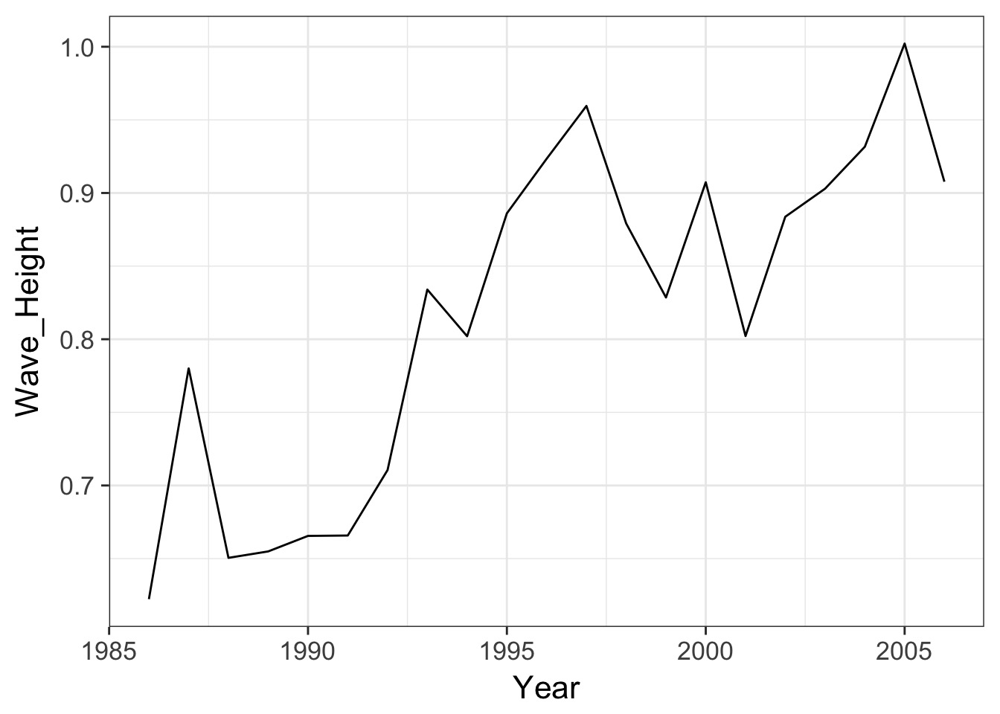

Writing Reusable Code with Functions

Let’s say you want to do this…

But what you have is…

Worse…
# A tibble: 6 x 16
YY MM DD hh WD WSPD GST WVHT DPD APD MWD BAR
<int> <int> <int> <int> <int> <int> <int> <int> <int> <int> <int> <dbl>
1 86 1 1 0 210 9 11 99 99 99 999 1009
2 86 1 1 1 210 9 10 99 99 99 999 1009
3 86 1 1 2 220 8 10 99 99 99 999 1009
4 86 1 1 3 220 6 8 99 99 99 999 1009
5 86 1 1 4 210 6 8 99 99 99 999 1009
6 86 1 1 5 210 6 8 99 99 99 999 1008
# ... with 4 more variables: ATMP <dbl>, WTMP <dbl>, DEWP <int>, VIS <int># A tibble: 6 x 16
YYYY MM DD hh WD WSPD GST WVHT DPD APD MWD BAR
<int> <int> <int> <int> <int> <dbl> <dbl> <dbl> <dbl> <dbl> <int> <dbl>
1 1999 1 1 0 221 5.40 7.20 0.330 11.1 5.25 999 1017
2 1999 1 1 1 218 5.60 7.30 0.310 11.1 5.51 999 1016
3 1999 1 1 2 226 5.70 7.00 0.320 12.5 6.53 999 1016
4 1999 1 1 3 228 5.70 7.30 0.310 11.1 6.17 999 1015
5 1999 1 1 4 237 5.90 7.70 0.390 11.1 5.02 999 1015
6 1999 1 1 5 235 5.70 7.50 0.420 11.1 4.81 999 1015
# ... with 4 more variables: ATMP <dbl>, WTMP <dbl>, DEWP <int>, VIS <int>Worse…
# A tibble: 6 x 18
X.YY MM DD hh mm WDIR WSPD GST WVHT DPD APD MWD
<chr> <chr> <chr> <chr> <chr> <chr> <chr> <chr> <chr> <chr> <chr> <chr>
1 #yr mo dy hr mn degT m/s m/s m sec sec degT
2 2012 06 30 23 50 253 3.4 4.2 0.52 9.09 5.33 86
3 2012 07 01 00 50 198 3.5 4.1 0.53 7.69 5.41 107
4 2012 07 01 01 50 199 4.0 4.7 0.48 10.00 5.60 102
5 2012 07 01 02 50 218 3.9 4.4 0.45 9.09 5.20 87
6 2012 07 01 03 50 222 4.5 4.8 0.41 7.69 4.68 100
# ... with 6 more variables: PRES <chr>, ATMP <chr>, WTMP <chr>,
# DEWP <chr>, VIS <chr>, TIDE <chr>Solutions?
Solutions
- Write code for each individual file
- Lots of copy-paste
- Write code that row-binds all data and clean from there
- Only good once - what about next year?
- Only good once - what about next year?
- FUNCTIONS!
A Funcitonal Outline
Intro to Functions
Modular Programming
When to write a function
“You should consider writing a function whenever you’ve copied and pasted a block of code more than twice”
- H. Wickham
Ugh…
df <- tibble::tibble(
a = rnorm(10),
b = rnorm(10),
c = rnorm(10),
d = rnorm(10)
)
df$a <- (df$a - min(df$a, na.rm = TRUE)) /
(max(df$a, na.rm = TRUE) - min(df$a, na.rm = TRUE))
df$b <- (df$b - min(df$b, na.rm = TRUE)) /
(max(df$b, na.rm = TRUE) - min(df$a, na.rm = TRUE))
df$c <- (df$c - min(df$c, na.rm = TRUE)) /
(max(df$c, na.rm = TRUE) - min(df$c, na.rm = TRUE))
df$d <- (df$d - min(df$d, na.rm = TRUE)) /
(max(df$d, na.rm = TRUE) - min(df$d, na.rm = TRUE))What is a function?
What is a function?
- A new object
- A call identifying this as a function
- One or more arguments
- The body of the function
- A return statement that gives something back to the user (if needed)
What is a function?
What is a function?
[1] 4Simpler ways of writing functions
Super short!
Let’s write some functions
[1] 4Let’s write some functions
Should return 4
Let’s write some functions
max_minus_min <- _______(___){
ret_value <- ___(___) - ___(___)
___(___)
}
max_minus_min(c(4,7,1,6,8))[1] 7On arguments
Functions can take many arguments:
These can be of any object type
Arguments can have default values
[1] 3You can have … to pass many arguments
make_mean <- function(a_vector, ...){
sum_vector <- sum(a_vector, ...)
n <- length(a_vector)
return(sum_vector/n)
}
make_mean(c(4,5,6), na.rm=TRUE)[1] 5Exercises
Write a function and paste it into the etherpad that
- Takes a vector and sums it up after it squares it
- use
c(4,5,6)to test (= 77)
- use
- Takes a number and combine it into a string with the word “elephants”.
- 1 elephants, 2 elephants, 15 elephants
- 1 elephants, 2 elephants, 15 elephants
- Takes a number, a string, and a separator and combines them
- my_function(3, “hello”, “-”) makes “3 - hello”
- Write a function that takes a year and reads in and returns one of the buoy data files. Test it on multiple files to make sure it handles NAs properly.
One Reading Function
How did I build that function?
- OK, what’s normally going to change
- The year!
- BUT - what could change under some circumstances?
- buoy number, directory, separator
- Write some test code
Test Code
Test Code
#define a year
a_year <- 2013
#make a filename
buoy_file <- str_c("./data/buoydata/44013_", a_year, ".csv")
# read in a file
read_csv(buoy_file, na = c("99", "999"))# A tibble: 8,210 x 18
X.YY MM DD hh mm WDIR WSPD GST WVHT DPD APD MWD
<chr> <chr> <chr> <chr> <chr> <chr> <chr> <chr> <chr> <chr> <chr> <chr>
1 #yr mo dy hr mn degT m/s m/s m sec sec degT
2 2012 12 31 23 50 234 8.5 10.2 0.42 3.33 3.14 279
3 2013 01 01 00 50 246 9.0 10.9 0.52 2.86 2.94 251
4 2013 01 01 01 50 243 7.3 9.4 0.50 3.33 3.05 237
5 2013 01 01 02 50 252 10.5 12.4 0.50 3.03 2.99 244
6 2013 01 01 03 50 256 10.9 13.0 0.65 3.70 3.28 265
7 2013 01 01 04 50 254 11.6 13.2 0.72 3.70 3.33 255
8 2013 01 01 05 50 244 10.8 12.7 0.84 4.00 3.54 260
9 2013 01 01 06 50 241 10.5 12.4 0.74 3.85 3.34 259
10 2013 01 01 07 50 237 9.7 11.9 0.67 3.70 3.17 257
# ... with 8,200 more rows, and 6 more variables: PRES <chr>, ATMP <chr>,
# WTMP <chr>, DEWP <chr>, VIS <chr>, TIDE <chr>More testing
# A tibble: 8,210 x 18
X.YY MM DD hh mm WDIR WSPD GST WVHT DPD APD MWD
<chr> <chr> <chr> <chr> <chr> <chr> <chr> <chr> <chr> <chr> <chr> <chr>
1 #yr mo dy hr mn degT m/s m/s m sec sec degT
2 2012 12 31 23 50 234 8.5 10.2 0.42 3.33 3.14 279
3 2013 01 01 00 50 246 9.0 10.9 0.52 2.86 2.94 251
4 2013 01 01 01 50 243 7.3 9.4 0.50 3.33 3.05 237
5 2013 01 01 02 50 252 10.5 12.4 0.50 3.03 2.99 244
6 2013 01 01 03 50 256 10.9 13.0 0.65 3.70 3.28 265
7 2013 01 01 04 50 254 11.6 13.2 0.72 3.70 3.33 255
8 2013 01 01 05 50 244 10.8 12.7 0.84 4.00 3.54 260
9 2013 01 01 06 50 241 10.5 12.4 0.74 3.85 3.34 259
10 2013 01 01 07 50 237 9.7 11.9 0.67 3.70 3.17 257
# ... with 8,200 more rows, and 6 more variables: PRES <chr>, ATMP <chr>,
# WTMP <chr>, DEWP <chr>, VIS <chr>, TIDE <chr>One Reading Function
Our conundrum
# A tibble: 8,168 x 16
YY MM DD hh WD WSPD GST WVHT DPD APD MWD BAR
<int> <int> <int> <int> <int> <int> <int> <chr> <chr> <chr> <chr> <dbl>
1 86 1 1 0 210 9 11 <NA> <NA> <NA> <NA> 1009
2 86 1 1 1 210 9 10 <NA> <NA> <NA> <NA> 1009
3 86 1 1 2 220 8 10 <NA> <NA> <NA> <NA> 1009
4 86 1 1 3 220 6 8 <NA> <NA> <NA> <NA> 1009
5 86 1 1 4 210 6 8 <NA> <NA> <NA> <NA> 1009
6 86 1 1 5 210 6 8 <NA> <NA> <NA> <NA> 1008
7 86 1 1 6 210 7 8 <NA> <NA> <NA> <NA> 1008
8 86 1 1 7 210 7 9 <NA> <NA> <NA> <NA> 1008
9 86 1 1 8 210 6 8 <NA> <NA> <NA> <NA> 1008
10 86 1 1 9 220 5 6 <NA> <NA> <NA> <NA> 1009
# ... with 8,158 more rows, and 4 more variables: ATMP <dbl>, WTMP <dbl>,
# DEWP <chr>, VIS <chr># A tibble: 8,348 x 16
YYYY MM DD hh WD WSPD GST WVHT DPD APD MWD BAR
<int> <int> <int> <int> <int> <dbl> <dbl> <dbl> <dbl> <dbl> <chr> <dbl>
1 1999 1 1 0 221 5.40 7.20 0.330 11.1 5.25 <NA> 1017
2 1999 1 1 1 218 5.60 7.30 0.310 11.1 5.51 <NA> 1016
3 1999 1 1 2 226 5.70 7.00 0.320 12.5 6.53 <NA> 1016
4 1999 1 1 3 228 5.70 7.30 0.310 11.1 6.17 <NA> 1015
5 1999 1 1 4 237 5.90 7.70 0.390 11.1 5.02 <NA> 1015
6 1999 1 1 5 235 5.70 7.50 0.420 11.1 4.81 <NA> 1015
7 1999 1 1 6 237 6.20 8.80 0.510 11.1 3.75 <NA> 1014
8 1999 1 1 7 235 8.00 9.80 0.610 11.1 3.71 <NA> 1014
9 1999 1 1 8 235 6.40 8.10 0.510 10.0 3.69 <NA> 1014
10 1999 1 1 9 244 7.30 9.60 0.550 11.1 3.79 <NA> 1014
# ... with 8,338 more rows, and 4 more variables: ATMP <dbl>, WTMP <dbl>,
# DEWP <chr>, VIS <chr>Our conundrum
# A tibble: 8,168 x 16
YY MM DD hh WD WSPD GST WVHT DPD APD MWD BAR
<int> <int> <int> <int> <int> <int> <int> <chr> <chr> <chr> <chr> <dbl>
1 86 1 1 0 210 9 11 <NA> <NA> <NA> <NA> 1009
2 86 1 1 1 210 9 10 <NA> <NA> <NA> <NA> 1009
3 86 1 1 2 220 8 10 <NA> <NA> <NA> <NA> 1009
4 86 1 1 3 220 6 8 <NA> <NA> <NA> <NA> 1009
5 86 1 1 4 210 6 8 <NA> <NA> <NA> <NA> 1009
6 86 1 1 5 210 6 8 <NA> <NA> <NA> <NA> 1008
7 86 1 1 6 210 7 8 <NA> <NA> <NA> <NA> 1008
8 86 1 1 7 210 7 9 <NA> <NA> <NA> <NA> 1008
9 86 1 1 8 210 6 8 <NA> <NA> <NA> <NA> 1008
10 86 1 1 9 220 5 6 <NA> <NA> <NA> <NA> 1009
# ... with 8,158 more rows, and 4 more variables: ATMP <dbl>, WTMP <dbl>,
# DEWP <chr>, VIS <chr># A tibble: 4,410 x 18
X.YY MM DD hh mm WDIR WSPD GST WVHT DPD APD MWD
<chr> <chr> <chr> <chr> <chr> <chr> <chr> <chr> <chr> <chr> <chr> <chr>
1 #yr mo dy hr mn degT m/s m/s m sec sec degT
2 2012 06 30 23 50 253 3.4 4.2 0.52 9.09 5.33 86
3 2012 07 01 00 50 198 3.5 4.1 0.53 7.69 5.41 107
4 2012 07 01 01 50 199 4.0 4.7 0.48 10.00 5.60 102
5 2012 07 01 02 50 218 3.9 4.4 0.45 9.09 5.20 87
6 2012 07 01 03 50 222 4.5 4.8 0.41 7.69 4.68 100
7 2012 07 01 04 50 231 3.4 3.8 0.40 9.09 5.24 82
8 2012 07 01 05 50 228 3.8 4.2 0.41 7.69 5.79 81
9 2012 07 01 06 50 245 3.4 3.7 0.40 9.09 6.05 72
10 2012 07 01 07 50 215 3.0 3.5 0.43 7.14 6.19 88
# ... with 4,400 more rows, and 6 more variables: PRES <chr>, ATMP <chr>,
# WTMP <chr>, DEWP <chr>, VIS <chr>, TIDE <chr>A Funcitonal Outline
Intro to Functions
Modular Programming
Problems with Buoys
- Names for year are nonstandard
- X.YY, YY, and YYYY
- Some years are listed with only two digits
- Typically, but maybe not always, < 1999
- Or has YY as column name
- Typically, but maybe not always, < 1999
Need to eliminate rows that start with
#yrWhen columns are combined, they all come out as characters
What to do?
[1] "X.YY" "MM" "DD" "hh" "mm" "WDIR" "WSPD" "GST" "WVHT" "DPD"
[11] "APD" "MWD" "PRES" "ATMP" "WTMP" "DEWP" "VIS" "TIDE"What to do? Stringr!
names(one_buoy) <- names(one_buoy) %>%
str_replace("^YY$", "YYYY") %>%
str_replace("X\\.YY", "YYYY")
names(one_buoy) [1] "YYYY" "MM" "DD" "hh" "mm" "WDIR" "WSPD" "GST" "WVHT" "DPD"
[11] "APD" "MWD" "PRES" "ATMP" "WTMP" "DEWP" "VIS" "TIDE"Now, make it a function!
What to do about character line?
# A tibble: 4,410 x 18
YYYY MM DD hh mm WDIR WSPD GST WVHT DPD APD MWD
<chr> <chr> <chr> <chr> <chr> <chr> <chr> <chr> <chr> <chr> <chr> <chr>
1 #yr mo dy hr mn degT m/s m/s m sec sec degT
2 2012 06 30 23 50 253 3.4 4.2 0.52 9.09 5.33 86
3 2012 07 01 00 50 198 3.5 4.1 0.53 7.69 5.41 107
4 2012 07 01 01 50 199 4.0 4.7 0.48 10.00 5.60 102
5 2012 07 01 02 50 218 3.9 4.4 0.45 9.09 5.20 87
6 2012 07 01 03 50 222 4.5 4.8 0.41 7.69 4.68 100
7 2012 07 01 04 50 231 3.4 3.8 0.40 9.09 5.24 82
8 2012 07 01 05 50 228 3.8 4.2 0.41 7.69 5.79 81
9 2012 07 01 06 50 245 3.4 3.7 0.40 9.09 6.05 72
10 2012 07 01 07 50 215 3.0 3.5 0.43 7.14 6.19 88
# ... with 4,400 more rows, and 6 more variables: PRES <chr>, ATMP <chr>,
# WTMP <chr>, DEWP <chr>, VIS <chr>, TIDE <chr>What to do? if, subset, mutate_all
# A tibble: 4,409 x 18
YYYY MM DD hh mm WDIR WSPD GST WVHT DPD APD MWD
<dbl> <dbl> <dbl> <dbl> <dbl> <dbl> <dbl> <dbl> <dbl> <dbl> <dbl> <dbl>
1 2012 6.00 30.0 23.0 50.0 253 3.40 4.20 0.520 9.09 5.33 86.0
2 2012 7.00 1.00 0 50.0 198 3.50 4.10 0.530 7.69 5.41 107
3 2012 7.00 1.00 1.00 50.0 199 4.00 4.70 0.480 10.0 5.60 102
4 2012 7.00 1.00 2.00 50.0 218 3.90 4.40 0.450 9.09 5.20 87.0
5 2012 7.00 1.00 3.00 50.0 222 4.50 4.80 0.410 7.69 4.68 100
6 2012 7.00 1.00 4.00 50.0 231 3.40 3.80 0.400 9.09 5.24 82.0
7 2012 7.00 1.00 5.00 50.0 228 3.80 4.20 0.410 7.69 5.79 81.0
8 2012 7.00 1.00 6.00 50.0 245 3.40 3.70 0.400 9.09 6.05 72.0
9 2012 7.00 1.00 7.00 50.0 215 3.00 3.50 0.430 7.14 6.19 88.0
10 2012 7.00 1.00 8.00 50.0 230 3.40 3.70 0.450 7.69 6.18 NA
# ... with 4,399 more rows, and 6 more variables: PRES <dbl>, ATMP <dbl>,
# WTMP <dbl>, DEWP <dbl>, VIS <dbl>, TIDE <dbl>Now, make it a function!
What to do?
[1] 98 98 98 98 98What to do? Dplyr!
[1] 1998 1998 1998 1998 1998Now, make a function!
And a wrapper function?

Wait, what is this modular madness?
Our code is now composed of modular pieces
- This means each modular function can be used in other contexts
- Enhances code flexibility and future reuse
- It also means it is easier to find where our code has gone wrong
- Easier to test and debug
AND - we don’t get lost writing one honking single function one_buoy <- one_buoy %>%
How to write complex functions/piplines
- Start with a wrapper
- Write out the steps of what you want to do in comments
- Pair those with functions using “snake case”
clean_data
- Use
%>%for efficiency/readability!
- Write out the steps of what you want to do in comments
- Write the subfunctions
- Repeat the toplevel comments anf functions
Continue until you have the lowest level atomized functions
Test THOSE functions. Then test up the chain….
Reality Check
Yes, sometimes you will write long functions - as long as they are simple and readable, meh
Final Exercises
- Write a function that will get monthly summaries of wave height and temperature only
- Make the returned column names for all values nice and readable
- Write a master wrapper function that you give a year, and it returns a monthy summarized well names data frame